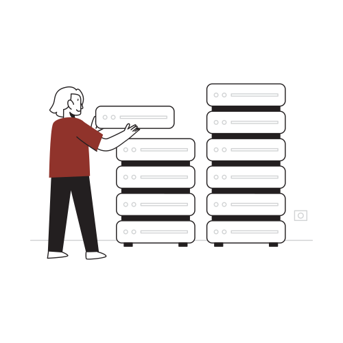

Elementos básicos

HADA es una herramienta para aprender algorítmica con los conceptos más básicos
e intermedios con explicaciones y para facilitar su entendimiento.
Primero veremos algunos conceptos básicos para entender con mayor facilidad
los temas respecto a la asignatura algorítmica
Aquí encontraras los temas más basicos de algorítmica.

HADA, es una herramienta didactica para el aprendizaje de algoritmia ╰(*°▽°*)╯
HADA surgió con la intención de ayudar a los alumnos del bachiller técnico en informática (B.T.I.); en la asignatura de algoritmia. ᓚᘏᗢ
Es un acrónimo, las siglas hacen referencia a el título de este proyecto. Estas significan: "Herramienta de Aprendizaje didactica para Algoritmia". (⌐■_■)
HADA fue desarollada por los alumnos del 3ro BTI del turno noche de la promo 2024